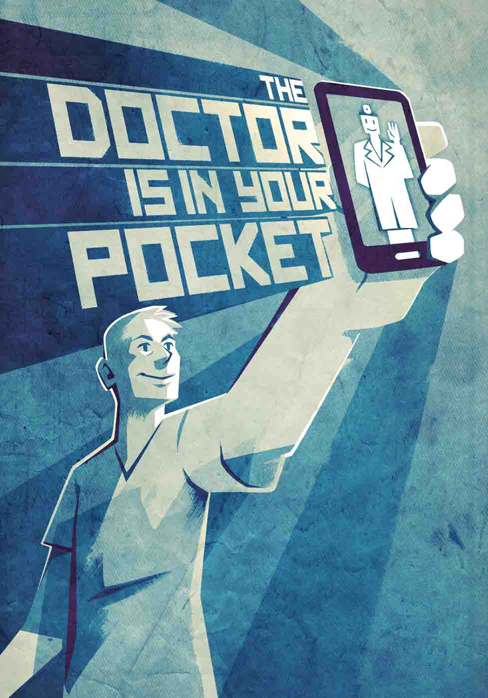

Wearable gadgets and smartphone apps track data, vital signs, and health habits like sleep or nutrition.
Smartphones also help us search the Web for health information and subscribe to public-health messaging.
In the future, we'll use personal technologies even more to monitor micro changes in the body and fine tune medication, diet, exercise, and doctor visits. Scientists will use patient-generated data for population studies on disease and treatment.
Today, a wearable device can help you understand health issues, see patterns, and take action. 